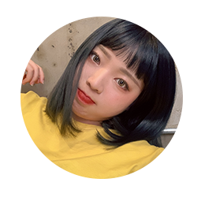

| APEN첫번째 공지사항 |
| Shin YoonSeo Web Contents Designer |
|
사이트를 제작하고 첫 공지사항입니다 ! 장기과제는 6월까지 단기과제는 이번주까지 성공하는 걸 목표로 하고 있어요 다들 봤던 것처럼 우리 팀의 웹사이트, 앱, 매칭기능 구현까지 틀이 잡혀가고 있어요 조만간 성과를 볼 수 있을 것 같습니다 이제 우리가 해야될 일들 정리해볼게요 ! 1. 강성욱 현재 사업은 개발단계이지만 개발 뒤 제품을 판매할 준비를 미리 완료 해놓아야합니다 ! 일단 전반적인 작업들을 정리하고 나서 사람들에게 설문조사를 해보거나, 홍보 할만한 컨텐츠를 만들거나 조금더 바쁘게 일했으면 좋겠어요~ 단기과제: 팀내 성과 보고서 제작 장기과제: 홍보 컨텐츠 제작 2. 박만호 요즘 필기감을 좋게 만드려고 공부를 열심히 하고 있는 만호님 칭찬합니다~ 다음주 정도면 연필로 쓰는것같은 노트를 볼 수 있을까요 ? 6월에 프로젝트를 앞두고 있는데 완성된 앱을 빨리 보고 싶네요 ! 단기과제: Soft Line 코드 완성 장기과제: Chatting 등 앱 기본 기능 완성 3. 신윤서 눈에 띄게 성장하는게 보이는 윤서 퍼블리싱도 스스로 할 수 있게됐대요(짝짝짝) 우리 블로그에 자주 들려서 점점 예뻐지는 사이트 구경해보세요 ! 백엔드 공부에도 흥미가 있다는데, 앞으로 건표님이 자주 찾아갈 것 같네요ㅎㅎㅎ 단기과제: 웹사이트 편집 장기과제: 백엔드 공부(건표한테 Node JS물어보기) 4. 김수정 소프트웨어 마스터 수정님이 백엔드 제작으로 넘어갔어요! 로그인이랑 로그아웃기능, 포스팅기능까지 만들어볼 생각이에요 앞으로는 각자가 스스로 글도 올릴 수 있을거예요! 단기과제: 백엔드로 회원관리할 것 만들기(로그인로그아웃 포스팅) 장기과제: 윤서랑 같이 공부하는거 돕기 5. 노건표 소프트웨어의 지원요정 건표님:) 정확히 담당을 정하기보다는 지원해주는 걸 부탁하고 싶어요 ! 미리 Node JS공부해보고 사람들이 막힐 때마다 뚫어주는 뚫어뻥이 되어주세요~ 장기과제: Node JS 공부 6. 강채현 채현님은 팀 내 유일한 디자이너예요 ! 우리가 포스팅을 하는데 그걸 표현할만한 그림이 없어서 너무 아쉬워요ㅠㅠ 간단하게 그려줄 수 있을까요? 그리구 시간이 날때 우리 팀의 전체적인 컨셉이랑 로고도 만들어보고싶어요! 단기과제: 첫글 그림 장기과제: 로고 및 컨셉팅 7. 오제규 [속보] 화학공학과 오제규, 4주째 실종상태, 팀원들이 얼굴잊어,, 보고싶다 성화 |